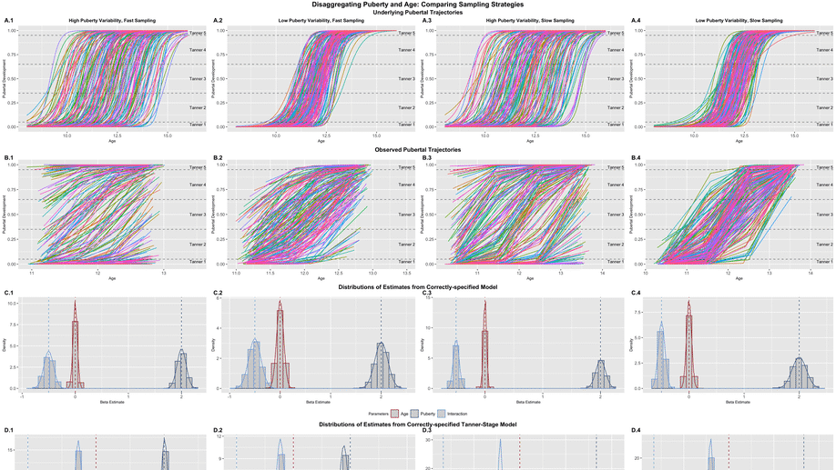
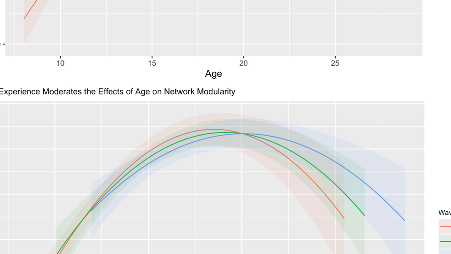
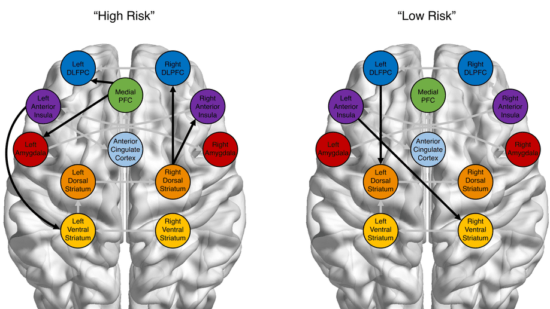
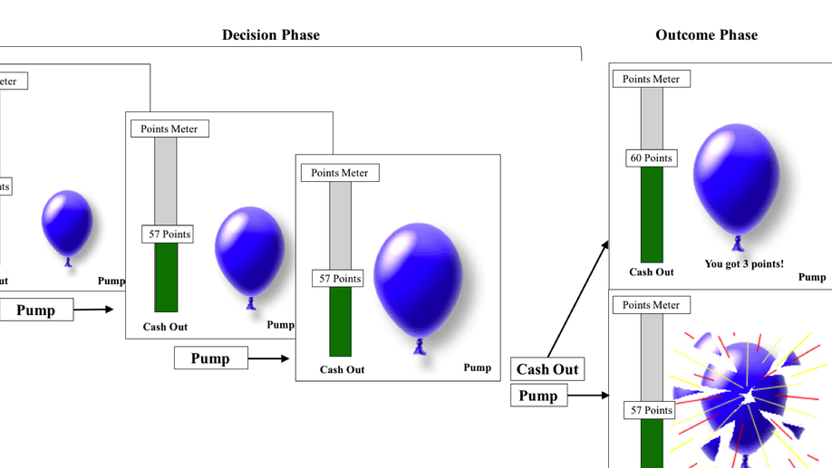

Broadly I am interested in how behavior, and associated neural processes, change over time in response to experience and maturation.
I use univariate and multivariate methods in functional neuroimaging, tools from network science, as well as computational and longitudinal (e.g., multi-level and structural equation) models to address these questions.
I am also interested in developing methodological tools to enhance my substantive research. I collaborate with Kathleen Gates and Patrick Curran to work on quantiative methodology development in network and longitudinal models.
PhD in Psychology and Neuroscience, 2020
University of North Carolina at Chapel Hill
MA in Psychology, 2016
University of Illinois at Urbana-Champaign
BS in Biochemistry, 2013
University of Arkansas

Citation: McCormick, E. M. (preprint). Multi-Level Multi-Growth Models: New opportunities for addressing developmental theory using longitudinal designs.

While it is well understood that the brain experiences changes across short-term experience/learning and long-term development, it is unclear how these two mechanisms interact to produce developmental outcomes. Here we test an interactive model of learning and development where certain learning-related changes are constrained by developmental changes in the brain against an alternative development-as-practice model where outcomes are determined primarily by the accumulation of experience regardless of age. Participants (8–29 years) participated in a three-wave, accelerated longitudinal study during which they completed a feedback learning task during an fMRI scan. Adopting a novel longitudinal modeling approach, we probed the unique and moderated effects of learning, experience, and development simultaneously on behavioral performance and network modularity during the task. We found nonlinear patterns of development for both behavior and brain, and that greater experience supported increased learning and network modularity relative to naïve subjects. We also found changing brain-behavior relationships across adolescent development, where heightened network modularity predicted improved learning, but only following the transition from adolescence to young adulthood. These results present compelling support for an interactive view of experience and development, where changes in the brain impact behavior in context-specific fashion based on developmental goals.

Theories of adolescent neurodevelopment have largely focused on group-level descriptions of neural changes that help explain increases in risk behavior that are stereotypical of the teen years. However, because these models are concerned with describing the “average” individual, they can fail to account for important individual or within-group variability. New methodological developments now offer the possibility of accounting for both group trends and individual differences within the same modeling framework. Here we apply GIMME, a model-based approach which uses both group and individual-level information to construct functional connectivity maps, to investigate risky behavior and neural changes across development. Adolescents (N = 30, Mage = 13.22), young adults (N = 23, Mage = 19.19), and adults (N = 31, Mage = 43.93) completed a risky decision-making task during an fMRI scan, and functional networks were constructed for each individual. We took two subgrouping approaches: 1) a confirmatory approach where we searched for functional connections that distinguished between our a priori age categories, and 2) an exploratory approach where we allowed an unsupervised algorithm to sort individuals freely. Contrary to expectations, we show that age is not the most influence contributing to network configurations. The implications for developmental theories and methodologies are discussed.
There has been a large spike in longitudinal fMRI studies in recent years, and so it is essential that researchers carefully assess the limitations and challenges afforded by longitudinal designs. In this article, we provide an overview of important considerations for longitudinal fMRI research in developmental samples, including task design, sampling strategies, and group-level analyses. We first discuss considerations for task designs, weighing the pros and cons of many commonly used tasks, as well as outlining how the tasks may be impacted by repeated exposure. Secondly, we review the types of group-level analyses that can be conducted on longitudinal fMRI data, analyses which must account for repeated measures. Finally, we review and critique recent longitudinal studies that have emerged in the past few years.

Research on adolescence has largely focused on the particular biological and neural changes that place teens at risk for negative outcomes linked to increases in sensation-seeking and risky behavior. However, there is a growing interest in the adaptive function of adolescence, with work highlighting the dual nature of adolescence as a period of potential risk and opportunity. We examined how behavioral and neural sensitivity to risk and reward vary as a function of age using the Balloon Analog Risk Task (BART). Seventy-seven children and adolescents (ages 8-17 years) completed the BART during an fMRI session. Results indicate that adolescents show greater learning throughout the task. Furthermore, older participants showed increased neural responses to reward in the OFC and ventral striatum, increased activation to risk in the MCC, as well as increased functional OFC-mPFC coupling in both risk and reward contexts. Age-related changes in regional activity and inter-regional connectivity explain the link between age and increases in flexible learning. These results support the idea that adolescents’ sensitivity to risk and reward supports adaptive learning and behavioral approaches for reward acquisition.